Histórico de construção do simulador Three.js (tipo GasAlertMax XT II), feito por agentes construtores por item e julgado por inspetores cegos que comparam cada item lado a lado com fotos reais. Simulador didático independente, sem afiliação com o fabricante.
Barra superior, câmeras, painéis laterais e barra de ações no estilo vidro líquido: translúcidos, com desfoque do ambiente, reflexo especular nas bordas e textos reforçados para leitura nos temas claro e escuro.
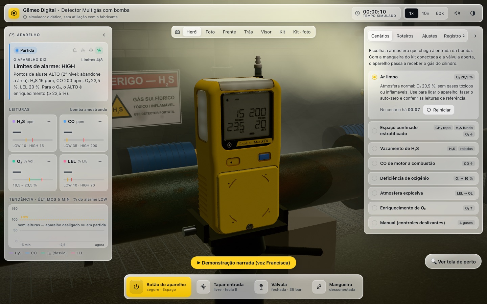
O simulador já abre no ambiente do cenário “Ar limpo”: oficina de manutenção fechada, aparelho no tripé, bancada, quadro de avisos e placa de EPI obrigatório. O estúdio branco continua no cenário “Manual”.
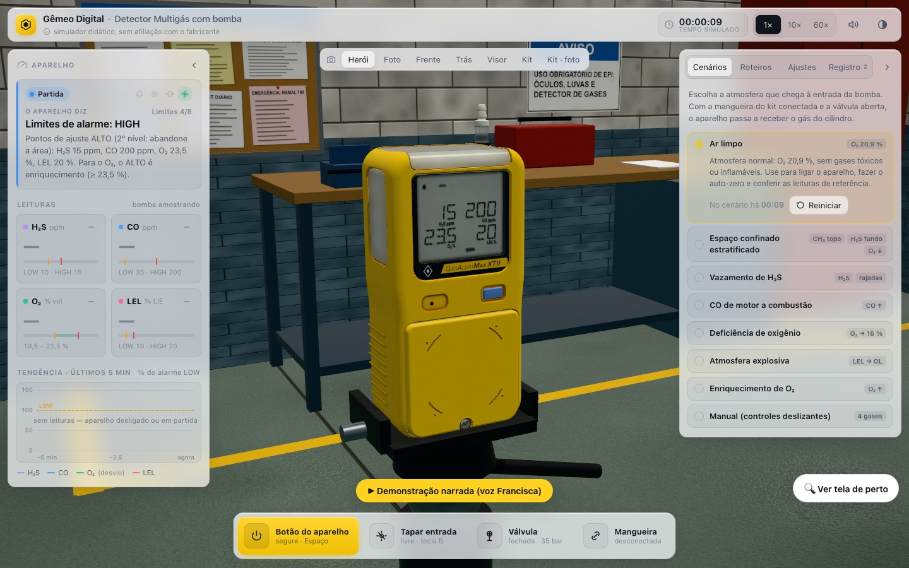
Aparelho no tripé em todos os cenários e ambientes fechados: oficina de manutenção (ar limpo), interior de tanque (confinado), casa de bombas de esgoto com válvula vazando (H₂S), galpão com gerador e empilhadeira (CO), sala de nitrogênio (deficiência de O₂), depósito de inflamáveis (explosiva) e central de oxigênio interna (enriquecimento de O₂).
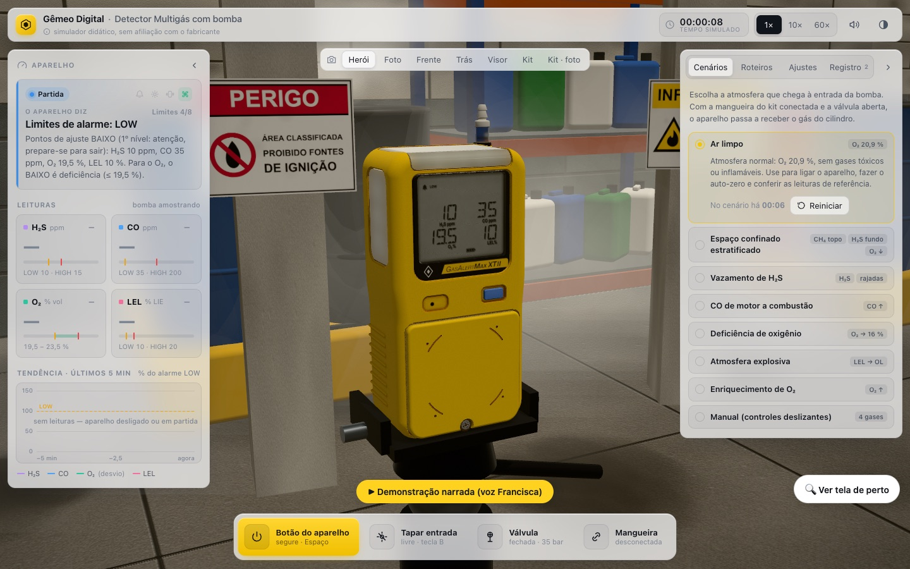
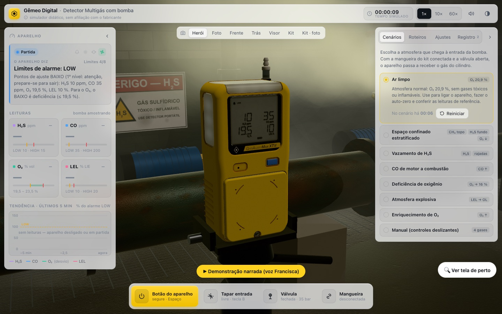
Aparelho montado em tripé de 1,15 m nos cenários CO de motor (galpão com empilhadeira, gerador e fumaça) e deficiência de O₂ (área de nitrogênio com névoa fria). Ambientes divididos entre 3 agentes; os demais cenários seguem em aprimoramento.
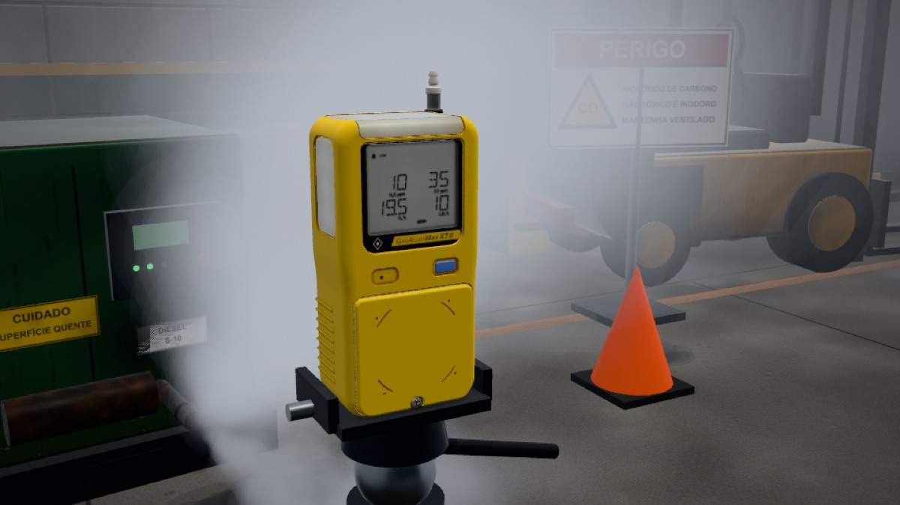
Ao escolher um cenário, o ambiente 3D muda: pátio industrial (ar limpo), interior de tanque (espaço confinado), estação com tubulação (vazamento de H₂S), galpão com motor a combustão (CO), área de nitrogênio (deficiência de O₂), parque de tanques (atmosfera explosiva), central de oxigênio (enriquecimento) e estúdio (manual), com placas NR-26 em português. Traseira refeita conforme fotos reais: bico de entrada no canto superior com filtro, clipe com alça, etiqueta, contatos de carga e parafusos.
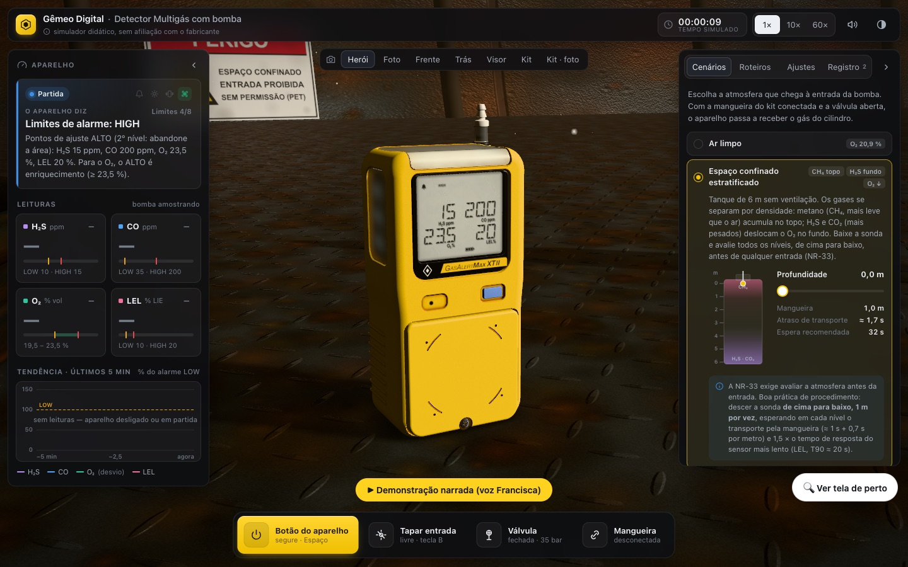
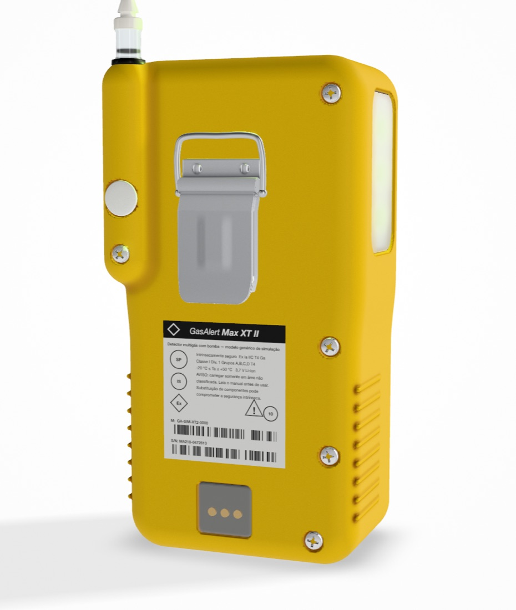
Demonstração em 9 capítulos: apresentação, o aparelho, ligar, o visor, o painel (cada informação e botão destacados com contorno amarelo), alarmes, bump test, calibração completa (contagem CAL, auto-zero, aplicar gás, span, dias até a próxima) e avaliação com 10 perguntas comentadas (aprovação com 70 %). Botão “Pular”. Rodada 2 de correções: firmware (109 testes), visor, carcaça (janelas translúcidas, LED vermelho com estrela), painel didático e kit de calibração.
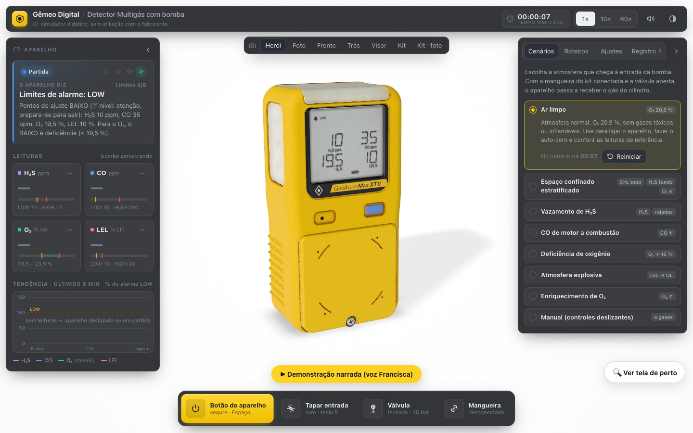
Novo botão (ou tecla V) que abre o visor do aparelho ampliado e ao vivo, com o botão do aparelho ao lado para operar sem sair da janela, e atalho para a vista de perto no 3D. A caixa de legenda da demonstração foi retirada para não tapar o aparelho: agora só a voz narra.
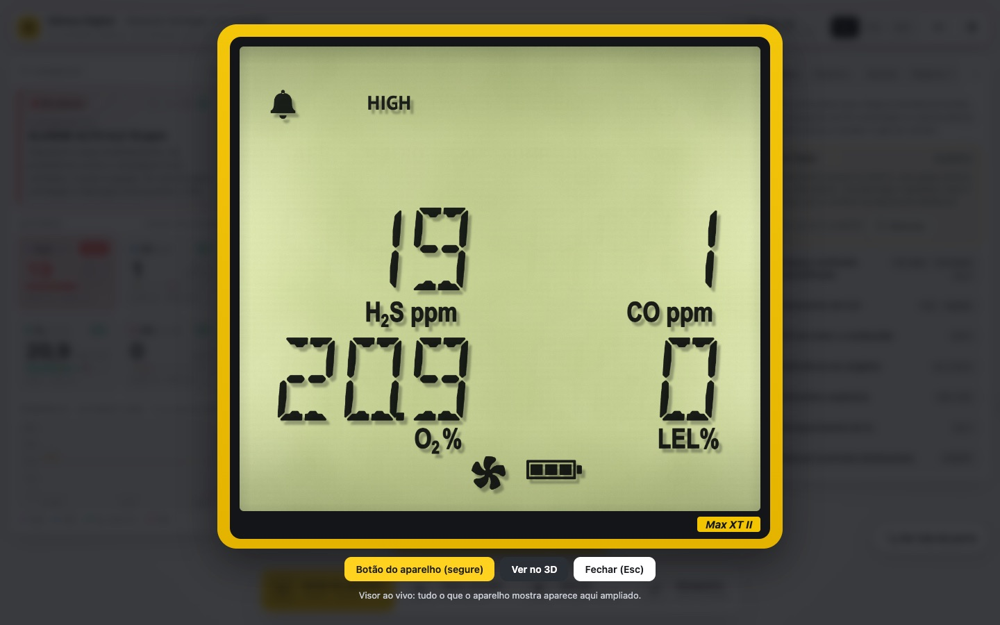
Tour guiado em 13 passos: partes do aparelho, autoteste, teste da bomba, leitura normal, alarme alto de H₂S, TWA/STEL, deficiência de O₂, atmosfera inflamável, kit de calibração, bump test e calibração. Narração com a voz Francisca (Microsoft Edge) ou a voz pt-BR do sistema, com legenda.
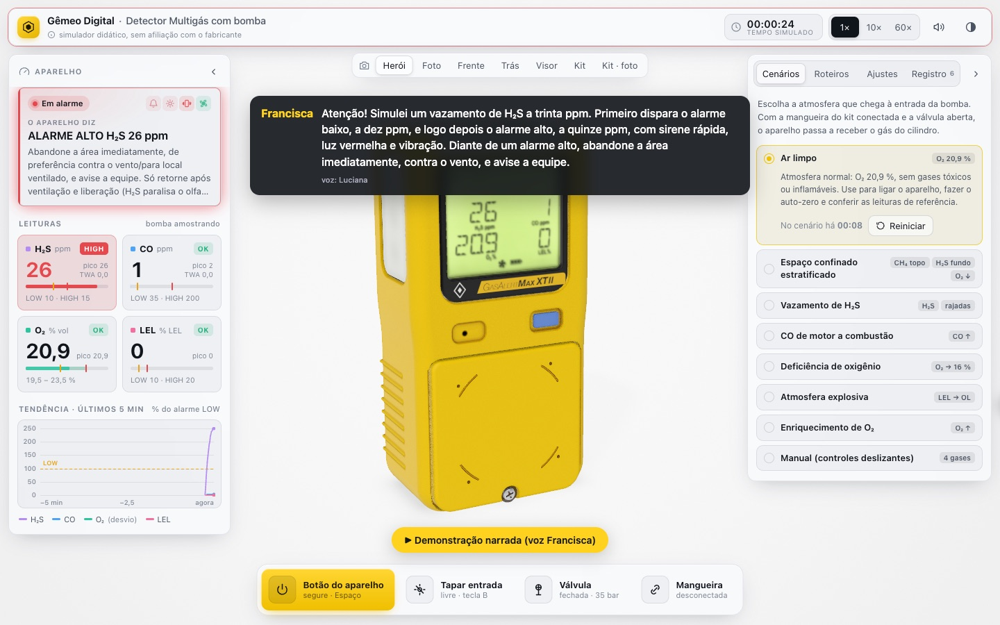
Todos os módulos integrados, sem erros de console, 60 fps. Inspetores independentes deram as notas abaixo (meta: 9). A 2ª rodada de correções foi interrompida.
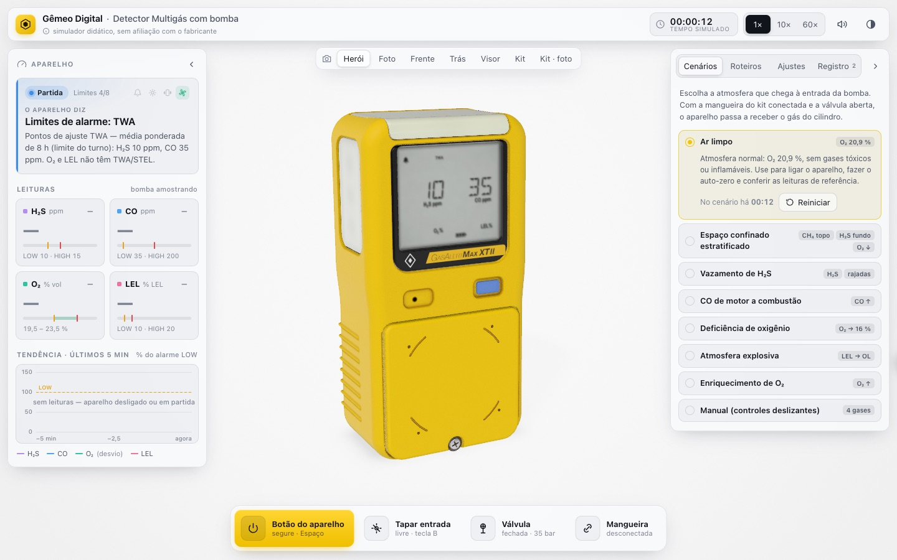
Firmware completo (97 testes), LCD segmentado com segmentos fantasma, LED vermelho com estrela de bloom, cilindro de 4 gases com rótulo genérico, regulador com manômetro, mangueira com física e sonda.
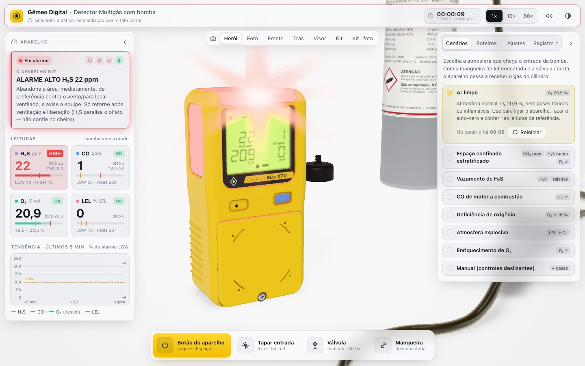
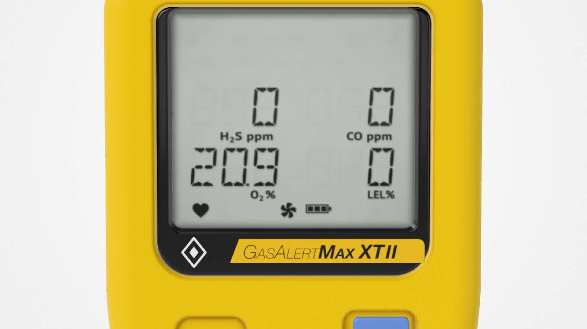
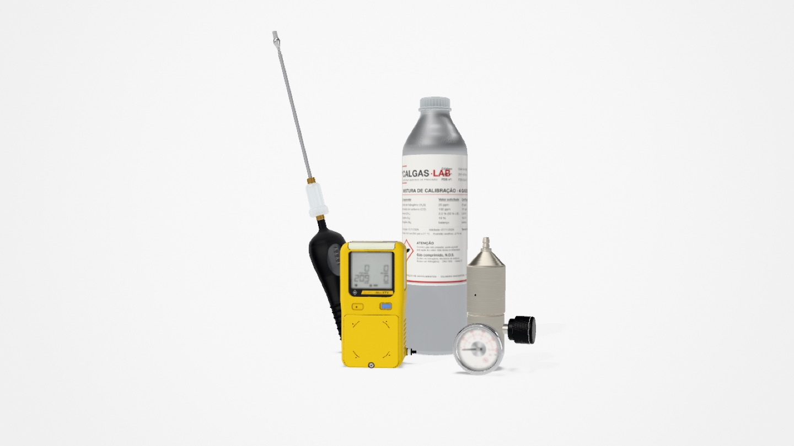
Carcaça modelada por campos de distância (SDF), luz de estúdio, primeiro LCD segmentado e o painel com cenários de gás.
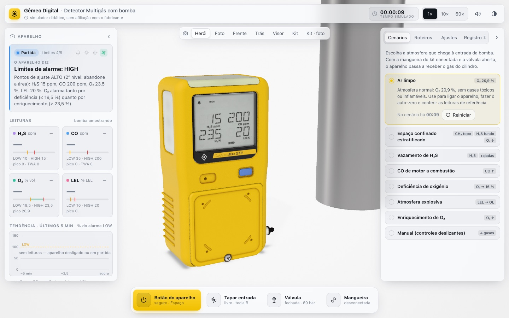
Contrato entre módulos, orquestrador, câmeras e peças provisórias para os 6 construtores trabalharem em paralelo.
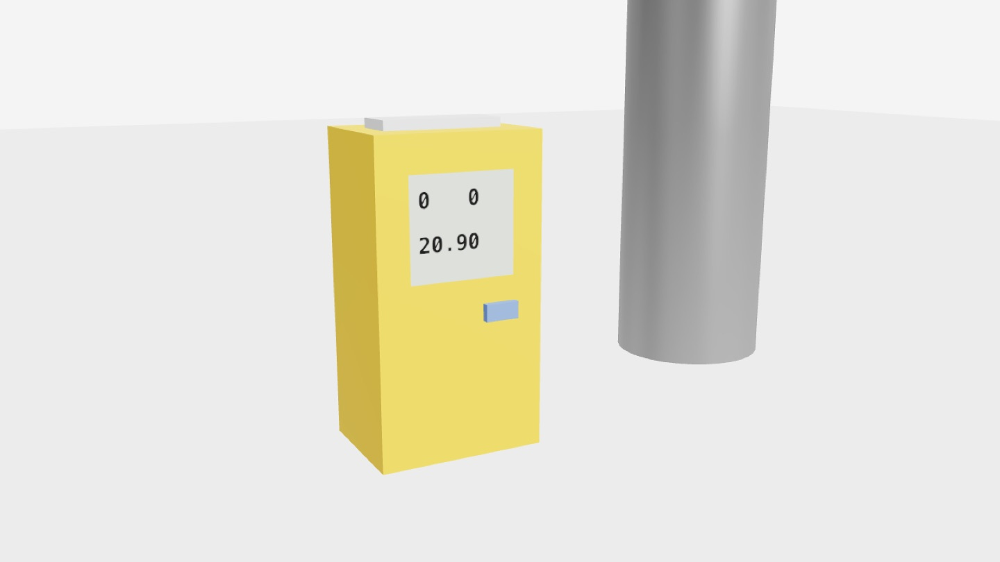
As fotos de referência usadas nas comparações cegas não são publicadas aqui, por serem de terceiros.